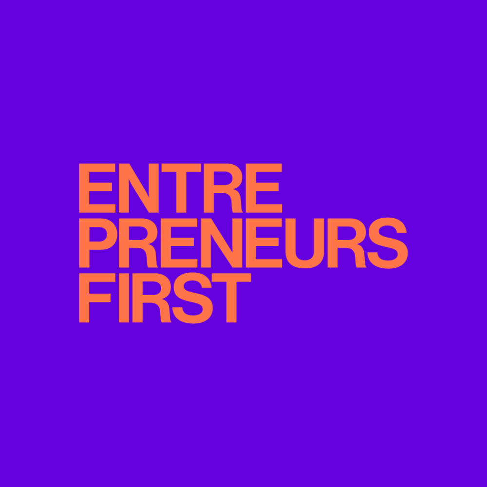

The Beginning
Born in 1982 in Lyon, a city known for its history, culture, and exceptional food. Lived there throughout my entire schooling until high school, spending time playing tennis, judo, skateboarding, snowboarding, and on my PlayStation.
University of Le Havre
Computer Science degree focusing on software development and programming fundamentals.

Led the document publishing team responsible for producing all legal documents as part of the credit distribution system rebuild. Managed weekly delivery schedules, deployment quality, and team activities. Developed business components for document generation using J2EE/EJB and SOA webservices.
Led a team of 5 developers to design and build a new Human Resources Portal for EDF serving over 100,000 employees. Managed team scheduling, daily client reporting, and code reviews. Developed the application using J2EE/EJB, SOA webservices, and Struts/SWT.
Designed and built HR Access to SAP HR interfaces using ABAP. Worked on parameterisation of Personnel Administration and Organisation Management modules.
Managed a quality testing team of 15 members (30% offshore in Mauritius) responsible for testing infrastructure and programmes before production deployment. Managed test campaign schedules, task assignments, and budget monitoring. Served as primary customer contact and led standardisation and optimisation of processes and deliverables.
Joined the Red Cross and led a team conducting weekly outreach patrols to check on homeless people in the district and provide care. Later joined the emergency medical team as an EMR (Emergency Medical Responder) and emergency vehicle driver, volunteering every weekend and responding to emergency situations with the team, stationed at Paris fire stations.
Built web applications focused on data visualisation for French newspapers with high traffic and visibility, including the reveal of WikiLeaks documents.
Moved to Berlin
Moved to Europe's startup capital for new adventures in tech, innovation, and world-class club culture.
AngryKatze
Developed web applications for French newspapers specialising in data journalism. Built a large-scale network scanner for a cybersecurity client.
Joined as CTO and rebuilt the engineering team from scratch. Built a scalable distributed data processing infrastructure using Python microservices and multiple database technologies to analyse retail foot traffic, customer movement patterns, and dwell time. Developed ML models (SVM) for customer geolocation. Company acquired by Telefónica NEXT.
Co-founded Dentolo as CTO and built the complete technical infrastructure from the ground up. Designed and deployed a Ruby on Rails application serving customers, operations team, and dentist network, featuring automated continuous deployment with 1300+ tests, high-availability architecture, and comprehensive security measures. Company acquired by Zurich Insurance in 2019.
Entrepreneurship Programs

Fellowship program focused on AI, Machine Learning, Blockchain, and Robotics. Developed products using Deep Learning (TensorFlow/Keras), Computer Vision (OpenCV), Deep Reinforcement Learning for game AI, and robotics/IoT projects with Raspberry Pi and Arduino.
Fellowship program where I developed an AI-powered communication coach providing instant feedback to sales teams during client calls, addressing limitations of traditional training programs. Left to co-found Back.
Co-founded Back as CTO, building an employee experience platform that automates conversations, knowledge, and journeys for HR, IT, and Finance teams. Hired the entire engineering team and built the complete infrastructure and software, integrating with workplace messaging apps like Slack/Teams and HR systems. Used by companies like Loom, Statista, and Pleo. Company acquired by Personio in 2022.
Joined as Head of Engineering following Back's acquisition. Led the Automation department with 4 engineering teams, integrating Back's software and developing a workflow automation platform for customer business processes. Later led a Payroll team, rebuilding the architecture and software to deliver a modernised, harmonised payroll solution.